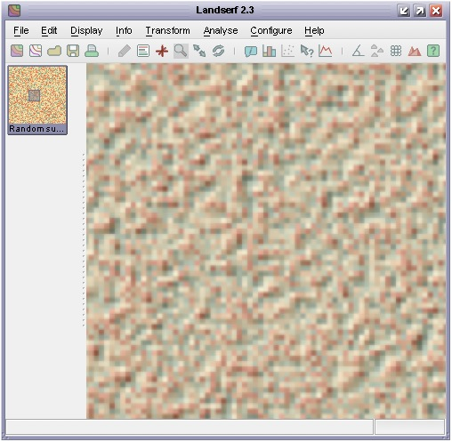
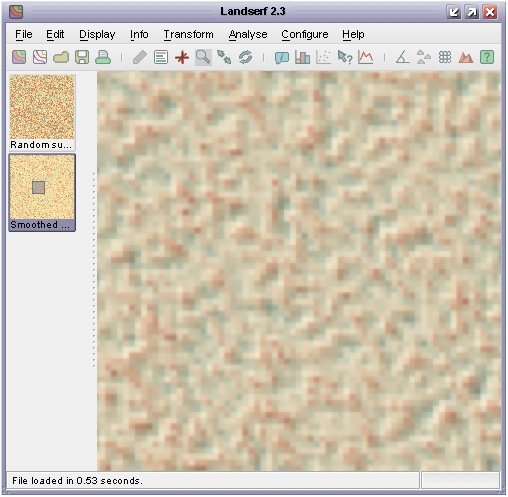

As you will have seen in the previous chapter, creating a new raster map
is as straight forward as calling one of the
RasterMap constructors. Each raster map will have a fixed number of rows and columns, some
metadata (title, map projection, notes etc.), a location and resolution. Depending on how much of this information
is known at compile-time, one of 7 different constructors can be called.
If you know the spatial properties of the raster you are about to create (location, x and y resolution and number of rows/columns),
the most useful constructor is probably RasterMap(int numRows, int numCols, Footprint fp). The
Footprint class is a general one for
storing the rectangular size and location of any spatial object. Its own constructor can take the coordinates of its
bottom left corner, its width and height (see Chapter 5 of Java Programming for Spatial Sciences
for more details of this class). When used as part of the RasterMap constructor, this footprint is used to define
the location and size of the bottom left pixel in the raster. Thus it defines both the location of the entire raster as well
as its resolution. For example, to create a raster map with the properties shown in the figure to the left, you would call the
following constructor:
new RasterMap(6,8, new Footprint(123,456,5,5)
This implicitly sets the top-right location to (163,486) (8 columns of 5 units = 40 and 6 rows of 5 units = 30).
Note that the location set by the origin is of the outer boundary of the bottom-left raster cell. The centre of that cell would be equal to the origin plus half the resolution in x and y directions (125.5, 458.5 in this example).
Other useful RasterMap constructors include two that take other spatial objects as arguments. RasterMap(RasterMap oldRaster)
will create a new raster that is a copy (clone) of oldRaster. This can be useful if you wish to create a new raster map
that will have identical spatial properties to an existing one, but perhaps modified contents. In a similar way you can create a new
raster map based on the spatial properties (but not contents) of a vector map (RasterMap(VectorMap oldVectorMap)).
Reading and writing the contents of individual raster cells is very straightforward once you have created a RasterMap
object. Cells can either be addressed by their row and column values (where row 0, column 0 is the top left cell), or by their absolute
geographic location. Row/column manipulation is generally easier when the contents of an entire raster are to be processed and
geographic location more useful when location of individual cells are to be processed (for example as a result of user input).
All raster values are store as float values and can therefore store any type of number with a precision of up to about
7 decimal places. To set an arbitrary raster value use either
setAttribute(int row, int col, float newValue) (row/column addressing)
or
setAttribute(new Footprint(float easting, float northing), float newValue) (geographic addressing)
Likewise, raster values can be retrieved using equivalent 'get' methods:
float rasterValue = getAttribute(int row, int col) (row/column addressing)
or
float rasterValue = getAttribute(new Footprint(float easting, float northing)) (geographic addressing)
In common with other SpatialObjects,
the boundary information and metadata associated with a RasterMap can be found easily using a number of 'get'
methods. In particular, to retrieve the bounds of a raster (or any SpatialObject, the method getBounds()
will return a Footprint representing the origin, width and height of the raster in geographic coordinates. Unlike
other spatial objects, the number of rows and columns in a raster can also be retrieved by calling getNumRows() or
getNumColumns(). The range of attribute values with a raster can be found with getMinAttribute()
and getMaxAttribute().
Other non-spatial metadata can be retrieved using methods such as getHeader() (title, notes, owner information)
and getColourTable(). Because these methods retrieve the metadata by reference, it is possible to edit metadata
without calling the equivalent 'set' method. For example to change the title of myRaster, you could do the following:
myRaster.getHeader().setTitle("A new title");
Map projection information can also be retrieved and changed using getProjection() and setProjection().
The information itself is stored in the Projection
class. Note however, that changing the map projection metadata does not itself change the projection of the raster. To reproject
a spatial object you would need to call ProjectionThread
or provide your own reprojection code.
The class below shows a simple example of manipulating a raster. It creates a new raster object of arbitrary dimensions and then allocates a random number between 0 and 100 to each cell in that raster. Finally it finds the range of values in that raster and allocates one of the preset colour tables stretched across that range.
1 2 3 4 5 6 7 8 9 10 11 12 13 14 15 16 17 18 19 20 21 22 23 24 25 26 27 28 29 30 31 32 33 34 35 36 37 38 39 40 41 42 43 44 45 46 47 48 49 50 |
import jwo.landserf.structure.*; // For spatial object class. import jwo.landserf.process.io.*; // For file handling. // ********************************************************** /** Creates a simple raster map containing random values * values. Demonstrates how raster values can be written. * @author Jo Wood * @version 1.1, 15th October, 2007 */ // ********************************************************** public class RandomSurface { //------------------ Starter Method ----------------- public static void main(String[] args) { new RandomSurface(); } //------------------- Constructor ------------------- public RandomSurface() { // Create a raster of 400 x 400 random cells with a 50 unit grid spacing // and origin at (450000,280000) RasterMap raster = new RasterMap(400,400,new Footprint(450000,280000,50,50)); for (int row=0; row<raster.getNumRows();row++) { for (int col=0; col<raster.getNumCols();col++) { raster.setAttribute(row,col,(float)Math.random()*100); } } // Add some simple metadata. Header header = new Header("Random surface"); header.setNotes("Uncorrelated random noise"); raster.setHeader(header); // Find range of values and create a colour table between them. float min = raster.getMinAttribute(); float max = raster.getMaxAttribute(); raster.setColourTable(ColourTable.getPresetColourTable(ColourTable.IMHOF_L3,min,max)); // Write new raster to file. LandSerfIO.write(raster,"random.srf"); } } |
The raster produced by this code is shown below.

Output from CreateRandomSurface() showing uncorrelated random noise and 'Imhof' colour scheme.
This second example creates another raster, but this time based on reading the values of an existing one. It first
creates a clone of the raster stored in the file random.srf (produced by the code above). It then replaces
each cell (except the first row and column) with the average of its neighbouring cells.
1 2 3 4 5 6 7 8 9 10 11 12 13 14 15 16 17 18 19 20 21 22 23 24 25 26 27 28 29 30 31 32 33 34 35 36 37 38 39 40 41 42 43 44 45 46 47 48 49 50 51 52 53 54 55 56 57 |
import jwo.landserf.structure.*; // For spatial object class. import jwo.landserf.process.io.*; // For file handling. // ********************************************************** /** Opens a raster map and smoothes its contents by averaging * local cells. Demonstrates how raster values can be read * and written. * @author Jo Wood * @version 1.1, 15th October, 2007 */ // ********************************************************** public class SmoothSurface { //------------------ Starter Method ----------------- public static void main(String[] args) { new SmoothSurface(); } //------------------- Constructor ------------------- public SmoothSurface() { // Read in a raster from a file. RasterMap raster = LandSerfIO.readRaster("random.srf"); if (raster == null) // Problem reading file { System.err.println("Problem reading raster"); System.exit(-1); } // Make a copy of the raster which will contain smoothed values. RasterMap smoothedRaster = new RasterMap(raster); // Smooth raster cells by taking average with cells to N and W. for (int row=1; row<smoothedRaster.getNumRows();row++) { for (int col=1; col<smoothedRaster.getNumCols();col++) { smoothedRaster.setAttribute(row,col,(raster.getAttribute(row-1,col-1)+ raster.getAttribute(row, col-1)+ raster.getAttribute(row, col))/3); } } // Add some simple metadata based on original raster. Header header = new Header("Smoothed "+raster.getHeader().getTitle()); header.setNotes("Smoothed "+raster.getHeader().getNotes()); smoothedRaster.setHeader(header); // Write new raster to file using non-factory method. LandSerfIO.write(smoothedRaster,"smoothed.srf"); } } |
The raster produced by this code is shown below.

Output from SmoothSurface() showing smoothed random noise and 'Imhof' colour scheme.
getIntersectionMER() to calculate the boundary of the intersecting region.
You will also need to identify cells using absolute geographic referencing rather than row/column values.